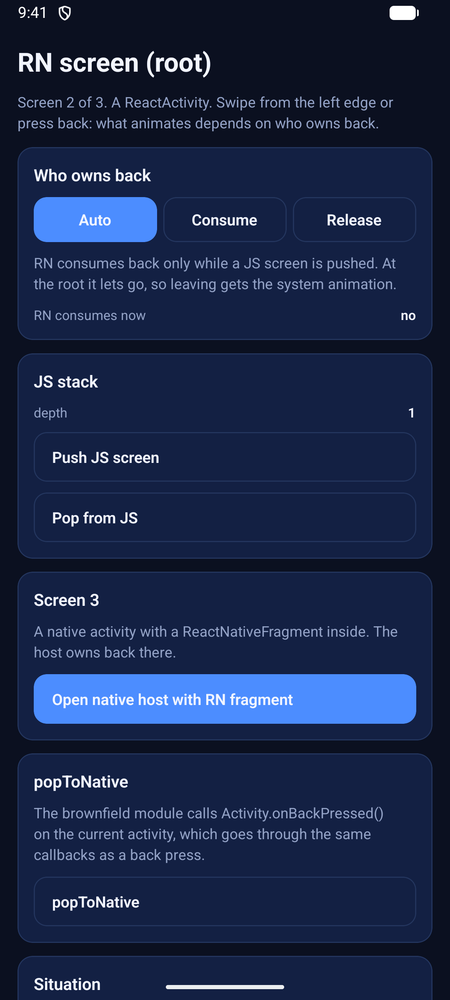
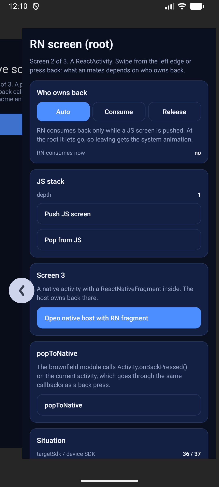
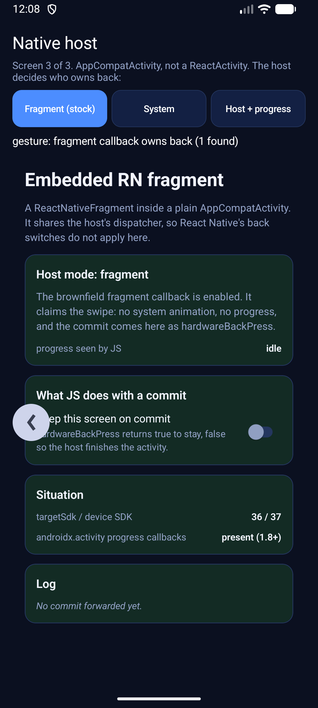
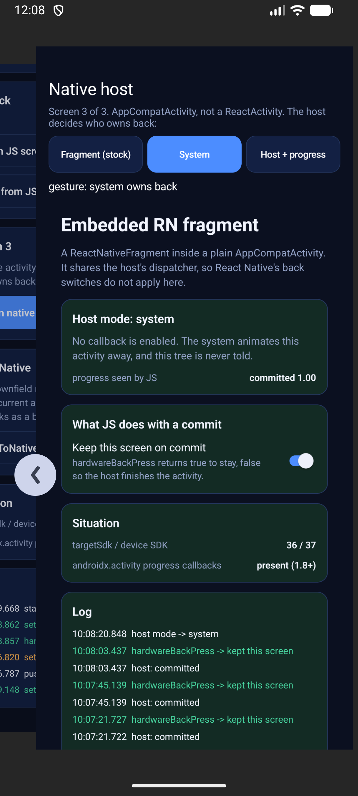
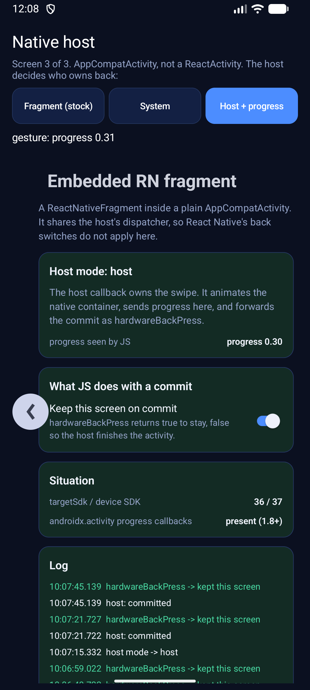

Research 1 — Predictive back in a react-native-brownfield app
Grzegorz Kruk, Callstack · 1 Oct 2026 · demo repo rn-predictive-back-brownfield
- The stock
ReactNativeFragmentalways blocks the system predictive-back animation on its host activity, and the host has no API to change that. BackHandlerlisteners are shared by every RN surface on one runtime, so a back meant for the embedded fragment also reaches the RN screen hidden below it, and can pop that screen instead.
Setup
| Piece | What it is |
|---|---|
android/ | React Native project. Builds a fat AAR com.pbb:brownfieldlib with the brownfield Gradle plugin (JS bundle, libappmodules.so, autolinked libraries). |
native-app/ | The APK. A plain Android app: no React Native Gradle Plugin, no autolinking, only depends on the AAR. Application is not a ReactApplication. |
| React Native | Local checkout ../react-native, branch grzegorzkruk/predictive-back-swipe, published as react-android:1000.0.0. |
| androidx | activity 1.8.2 (progress callbacks), fragment 1.8.9, appcompat 1.7.1. |
| Device | Emulator, Android 17 (API 37), gesture navigation. App targetSdk 36, so predictive back cannot be turned off. |
The three screens
| # | Screen | Back setup |
|---|---|---|
| 1 | LauncherActivity — native | No callback. A swipe is the system back-to-home animation. |
| 2 | RNActivity — a real ReactActivity | The only surface where BackHandler.setInterceptEnabled applies. Gets its ReactHost from ReactNativeBrownfield.shared. A small JS stack (plain state) with an ownership switch: Auto (consume only while a JS screen is pushed), Consume, Release. |
| 3 | NativeHostActivity — native chrome + ReactNativeFragment | The host picks one of three modes:
DefaultHardwareBackBtnHandler, so when JS does not handle back, React Native calls the host and the host finishes itself. |
Results
| Where | Mode | What happened | |
|---|---|---|---|
| Screen 2 | Auto, JS screen pushed | Swipe arrived as hardwareBackPress, JS popped to depth 1, RN released the gesture again. | works |
| Screen 2 | Auto, at root | System predictive-back animation back to the native launcher. | works |
| Screen 3 | Fragment (stock) | No system animation, no progress anywhere. The commit reached JS; JS could keep the screen (true) or let the host finish it (false). | no animation |
| Screen 3 | System | System cross-activity animation back to screen 2. JS was never told, even with "keep this screen" on. | works |
| Screen 3 | Host + progress | Live progress (native label 0.31, JS 0.30 at the same frame). Host scaled and shifted its container, JS moved its title. Commit forwarded as hardwareBackPress; JS kept the screen. | works |





Findings
1. Stock ReactNativeFragment always claims back on the host
ReactNativeBrownfield.createView registers this on the host activity's dispatcher for every fragment:
val backPressedCallback = object : OnBackPressedCallback(true) {
override fun handleOnBackPressed() { resolvedDelegate.onBackPressed() }
}
activity?.onBackPressedDispatcher?.addCallback(lifecycleOwner, backPressedCallback)
It is always enabled and private. An enabled callback suppresses the system animation and keeps FragmentManager from seeing the swipe. So any native screen that embeds RN loses predictive back, even if the RN content has nothing to pop. The demo's System mode only works because the host finds this callback on the dispatcher with reflection — a workaround, not a fix.
Fix belongs in react-native-brownfield: expose the callback (or an isBackEnabled switch) to the host, or start it disabled and let JS turn it on while it has something to pop.
2. BackHandler is global across RN surfaces
Screens 2 and 3 run on one React Native runtime. BackHandler keeps one listener list for the whole runtime and calls listeners newest-first until one returns true. React Native does not say which surface the back press was for.
Reproduced: screen 2 at JS depth 3, open screen 3, swipe. The fragment's JS returned false ("released, host finishes"), then screen 2's listener — still mounted under screen 3 — returned true and popped its hidden stack to depth 2. Screen 3 stayed open. Coming back showed screen 2 at depth 2.
Any brownfield app with more than one RN surface alive can hit this. Each listener has to know if its own surface is in front. RN has no API for that today.
3. setInterceptEnabled does nothing in a fragment
It acts on reactContext.currentActivity, and only if that is a ReactActivity. A ReactNativeFragment's host is not, so the host has to own the decision. That's fine, but it has to be documented: in brownfield, back for embedded RN is a host responsibility.
4. A host-owned callback with activity 1.8 progress works well
The host overrides handleOnBackStarted / Progressed / Cancelled / Pressed, animates its own container, sends progress to JS as device events, and forwards the commit through ReactFragment.onBackPressed(). JS keeps the final say through hardwareBackPress. Implementing DefaultHardwareBackBtnHandler on the host avoids brownfield's "disable, re-dispatch" fallback, which would loop back into an enabled host callback.
Build problems found along the way
- "Wrong bytecode version. Expected 99 but got 98" at startup. The React Native Gradle Plugin prefers a
hermescbuilt from source if one exists, and the RN checkout had an old one inReactAndroid/hermes-engine/build. Fixed by pinningreact.hermesCommandto the npmhermes-compilerand linking that from the RN checkout. - The brownfield plugin's asset merge kept a stale JS bundle from the Gradle cache. Clear
android/brownfieldlib/buildbeforeyarn aar. - A dependency's manifest asks for nearby-devices permission when RN starts; the demo just dismisses it.
How to run
yarn install # links ../react-native and ../react-native-brownfield yarn rn:publish # once, or after RN native changes yarn brownfield-plugin:publish rm -rf android/brownfieldlib/build && yarn aar yarn native:install